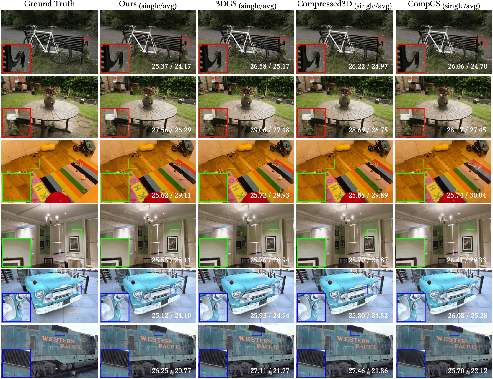

3D Gaussian Splatting (3DGS) has rapidly become the de facto candidate for representing 3D scenes. It strikes a rare balance—offering both exceptional visual quality than meshes, voxels, or surfels, and real-time rendering speeds that outperform NeRF-like methods. Its success is evident in applications like novel view synthesis, avatars, animation, and physics simulations, where high fidelity and speed are crucial.
But this power comes with a catch: massive file sizes.
Because 3DGS explicitly models the physical world by fitting it with millions of 3D Gaussians—each treated as a point with view-dependent attributes like color, orientation, and scale—the resulting model becomes a specialized, attribute-rich point cloud. Each point is an oriented ellipse, splatted into the target view and blended in the right order—conceptually similar to triangle rasterization in traditional graphics.
These large files are problematic, especially for edge devices with limited storage and memory, and for scenarios involving network transmission, where bandwidth and latency matter.
The Problem: Compression That Doesn’t Scale
Compressing 3DGS models is a natural solution—and researchers have explored techniques like:
- Pruning
- Quantization
- Entropy coding
- Compact data structures (e.g., hash tables and grids)
While effective, most existing approaches depend heavily on retraining or refinement steps to restore lost quality. These steps are resource-intensive and often require specialized software frameworks or hardware setups, making them impractical for large-scale or high-resolution scenes (see Fig. 1).
Even worse, if you want a different compression ratio or quality target, you typically need to tweak parameters and rerun the pipeline from scratch—an inflexible and time-consuming process, especially when dealing with fluctuating bandwidth or diverse user hardware capabilities.
Can We Compress Without Training?
What if we eliminate training altogether?
This is challenging—no learning means no opportunity for a model to discover compact representations or compensate for quality loss. Inspired by zero-shot techniques used in language model compression, we experimented with naive pruning and scalar quantization. However, they struggled to effectively reduce redundancy while preserving quality.
Then came a key insight: parameter importance in 3DGS is highly skewed—not just across entire Gaussian primitives, but across their individual attributes.
For example:
- Some 3D Gaussians cover large areas with high opacity, making them critical to preserve, while others contribute little to the final image.
- Some attributes (like position) have high visual impact, while others (like minor color variations) are more tolerant to errors.
Unfortunately, prior methods either ignored these varying sensitivities, applying the same bit-widths or pruning across the board, or required excessive retraining or refinement to learn.
We found that while importance for Gaussian primitives is scene-dependent, the error sensitivity pattern across attributes is largely scene-agnostic, enabling a middle-ground solution that avoids retraining altogether.
FlexGaussian: Training-Free Compression with Attribute-Sensitivity-Aware Pruning and Quantization
FlexGaussian compresses pre-trained 3DGS models using:
- Pruning: selectively removing entire or partial Gaussians based on importance
- Quantization: applying round-to-nearest (RTN) scalar quantization to each attribute, using different bit-widths depending on tolerance to error
We introduce two pruning parameters:
- P_row – controls row-wise pruning
- P_sh – controls shape-based pruning
Both strategies individually achieve ~6× compression with only 0.2–0.4 dB drop in PSNR, depending on the scene. However, combining pruning and quantization is tricky:
- It amplifies compression, but also compounds quality loss
- While attribute importance is consistent across scenes, Gaussian importance is scene-dependent, meaning that the same P_row and P_sh settings can result in very different outcomes
Here’s the advantage of our training-free approach: even though optimal parameters vary per scene, evaluating them is fast and cheap.
Through profiling, we observed that only a limited number of pruning-quantization combinations lie on the Pareto-optimal frontier for quality and compression. This allows us to search efficiently over this small set to find the best setting. We call this system FlexGaussian.
How FlexGaussian Works
FlexGaussian starts with a pre-trained 3DGS model and a user-specified compression target—either a quality threshold (e.g., max PSNR drop) or a file size goal.
Put it together, FlexGaussian works with the below pipeline:
- Compute importance scores for each Gaussian primitive
- This step is modular and can be replaced with future improvements
- For each candidate pair of pruning parameters (P_row, P_sh):
- Apply pruning
- Apply scalar quantization with attribute-specific bit-widths
- Dequantize and render the scene
- Evaluate quality (e.g., PSNR)
- Loop until a valid solution is found or all combinations are exhausted
This full loop—prune → quantize → render → evaluate—takes just 1–2 seconds, enabling real-time adaptation to different compression needs without training (see Fig. 2).
Results: Fast, Flexible, and Powerful
We evaluated FlexGaussian across multiple benchmarks:
- Mip-NeRF360
- Tanks & Temples
- Deep Blending
We compared against:
- Retraining-based methods
- Refinement-based methods
- FCGS – the only known training-free state-of-the-art (SOTA)
On a desktop with NVIDIA RTX 3090, FlexGaussian achieved:
- Up to 96.4% file size reduction
- <1 dB quality loss
- 1.7–2.1× faster performance than FCGS
- Orders of magnitude faster than training-based approaches
Quality comparisons are shown in Fig. 3. For interactive zoom-in results and rendered video, we encourage readers to visit the project page. Most notably, FlexGaussian's training-free, low-cost design makes it deployable on mobile-class devices like Jetson AGX Xavier, expanding its usability beyond desktops and into real-world edge deployments.

Closing Thoughts
FlexGaussian strikes a powerful balance between compression performance, visual quality, and computational cost—all without retraining. It offers a fast, flexible, and scalable solution for compressing 3D Gaussian Splatting, paving the way for deployment across distributed edge devices and enabling efficient 3DGS streaming.